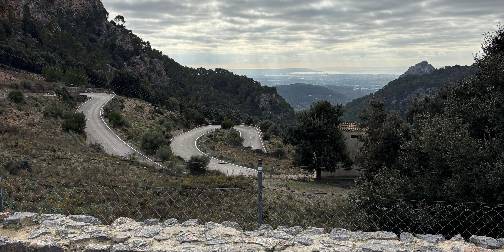

La teva guia definitiva de ports de muntanya a Mallorca.
Carregant ports de muntanya...
No tens cap port guardat encara. Explora el catàleg!
Som estudiants d'Enginyeria Informàtica i hem creat Mallorca Cycling per als amants de la carretera i el desnivell.
Aquesta Web-App utilitza dades reals de l'API de Strava per oferir-te els millors temps i altimetries.
Municipi:
Distància: km
Desnivell: m
Pendent mitjà: %
KOM: Carregant... | Temps: Carregant...
QOM: Carregant... | Temps: Carregant...
El teu temps personal: Carregant dades...